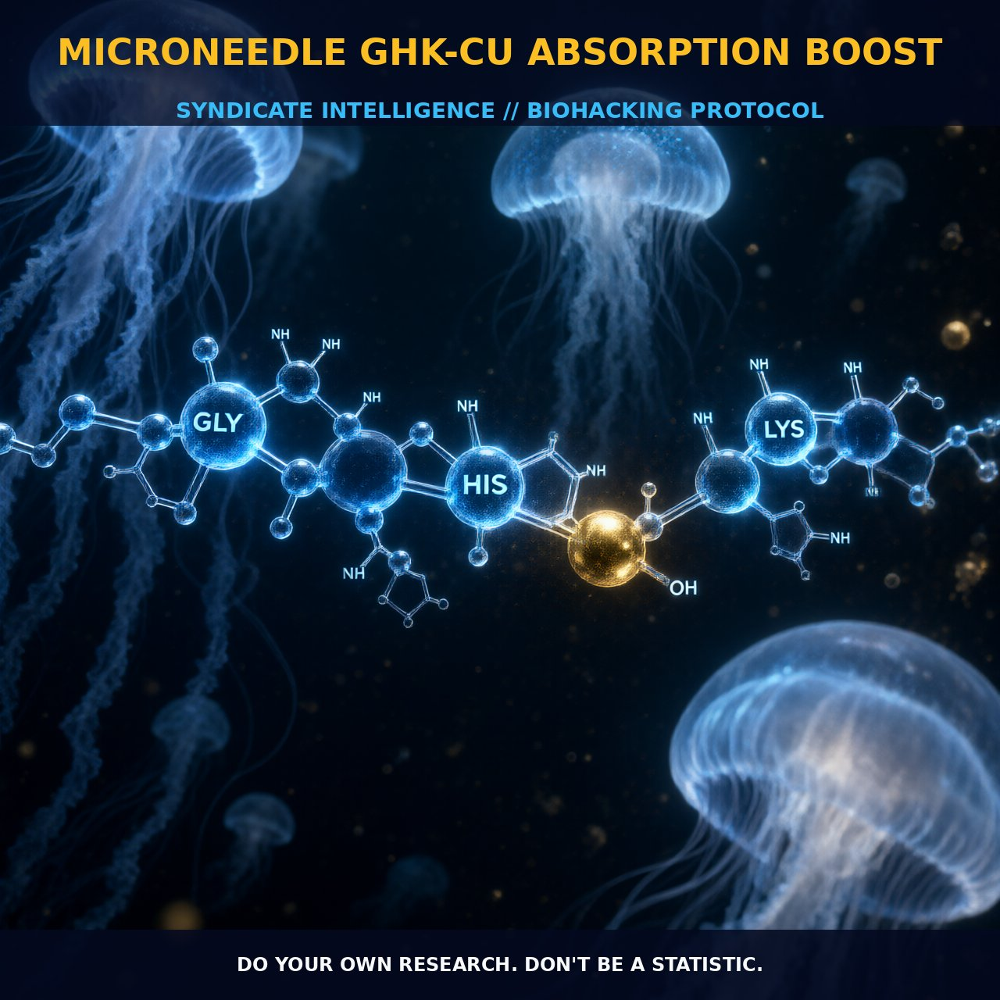

Microneedle GHK-Cu Absorption Boost: Enhancing Skin Regeneration and

The Mechanism
Microneedle-mediated delivery of GHK-Cu represents a promising approach to enhancing the skin absorption of this versatile peptide. GHK-Cu, a complex of the tripeptide GHK with copper, is renowned for its potent regenerative and protective properties. It is naturally present in human plasma, saliva, and urine, with levels decreasing as we age. GHK-Cu plays a critical role in skin regeneration and wound healing by stimulating collagen and glycosaminoglycan synthesis, modulating metalloproteinase activity, and attracting immune and endothelial cells to injury sites. However, its hydrophilic nature makes it challenging to penetrate the skin barrier effectively.
The use of microneedles creates microchannels in the skin, facilitating the permeation of GHK-Cu and increasing its bioavailability. This method not only enhances the delivery of the peptide but also minimizes potential irritation and improves the efficiency of topical application. The microneedle technique involves the use of an array of tiny needles that puncture the stratum corneum, the outermost layer of the epidermis, without causing significant pain or damage. These microneedles effectively create pathways for GHK-Cu to bypass the natural barriers and reach the deeper layers of the skin where it can exert its regenerative effects.
Studies have shown that microneedles can significantly enhance the permeation of GHK-Cu, with up to 134 ± 12 nanomoles of peptide and 705 ± 84 nanomoles of copper permeating through the skin in as little as nine hours. This enhanced permeability allows for a more effective delivery of GHK-Cu, potentially leading to better anti-wrinkle and wound-healing outcomes.
The Biological Leverage
GHK-Cu exerts its biological effects through multiple pathways, including the regulation of gene expression and the modulation of various cellular processes. The peptide has been shown to upregulate and downregulate over 4,000 human genes, essentially resetting DNA to a healthier state. This multifaceted action provides a range of benefits, including increased collagen and glycosaminoglycan synthesis, enhanced blood vessel and nerve outgrowth, and anti-inflammatory effects.
The peptide's ability to attract immune and endothelial cells to injury sites further supports its wound-healing capabilities. Additionally, GHK-Cu has been found to stimulate both the synthesis and breakdown of collagen and glycosaminoglycans, playing a crucial role in maintaining skin elasticity and firmness. It also modulates the activity of metalloproteinases and their inhibitors, which are essential for maintaining the balance between collagen synthesis and degradation. This balanced regulation ensures that the skin remains in a state of repair and renewal, promoting healthy tissue regeneration.
Moreover, GHK-Cu enhances the replicative vitality of fibroblasts, which are critical for wound healing and tissue repair. The peptide's ability to upregulate genes involved in angiogenesis and nerve outgrowth further supports its regenerative potential. This action not only aids in the repair of skin but also extends to other tissues, such as lung connective tissue, bony tissue, liver, and stomach lining. The anti-inflammatory properties of GHK-Cu also contribute to its protective effects, reducing oxidative stress and inflammation in various tissues. By targeting multiple cellular pathways, GHK-Cu offers a comprehensive approach to promoting tissue repair and regeneration, enhancing skin health, and potentially supporting overall well-being.
Tactical Implementation
To implement microneedle-mediated GHK-Cu absorption, it is essential to follow a structured protocol that ensures both efficacy and safety. First, prepare the microneedle array by applying it to the skin with a low-to-moderate force to create the microchannels. Ensure that the skin is clean and dry to facilitate better penetration. Once the microchannels are established, apply a topical solution containing GHK-Cu. The recommended concentration of GHK-Cu can vary, but studies suggest that a concentration of around 1% to 3% is effective for enhancing skin permeability. Apply the solution gently, allowing it to be absorbed by the skin over several hours.
Timing is also crucial for optimal results. Applying the microneedle treatment in the morning and following it with the GHK-Cu solution can help ensure that the peptide is absorbed throughout the day, providing sustained benefits. Additionally, combining GHK-Cu with other anti-inflammatory and regenerative agents, such as curcumin or palmitoylated GHK (Pal-GHK), can enhance the overall efficacy of the treatment. Curcumin, known for its anti-inflammatory and antioxidant properties, can complement the benefits of GHK-Cu by reducing oxidative stress and promoting a healthier cellular environment.
Stacking GHK-Cu with other biohacking compounds can also provide synergistic effects. For example, combining GHK-Cu with whey protein or brown rice protein can enhance muscle recovery and tissue repair, making it an excellent choice for fitness enthusiasts and athletes. The peptide's regenerative properties, combined with the protein's ability to support muscle health, can lead to a more comprehensive approach to optimizing physical performance and recovery.
Prostar Life Hack
To maximize the benefits of GHK-Cu with microneedles, apply the treatment in the morning and follow it with a GHK-Cu solution. Combine it with curcumin for enhanced anti-inflammatory and antioxidant effects. For athletes, stacking GHK-Cu with whey or brown rice protein can further enhance muscle recovery and tissue repair.
[ AUTHOR: LEAD TECHNICAL RESEARCHER ]